Nuton: from a summary to a study partner.
Nuton is an AI learning platform I co-founded. I redesigned it from a tool that summarised your notes into one that teaches them back: lessons shaped to how you learn, a tutor called Nuri, quizzes that explain every answer, and streaks that bring you back tomorrow.
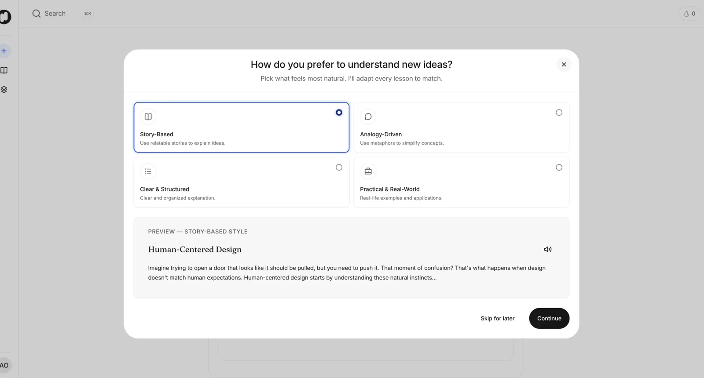
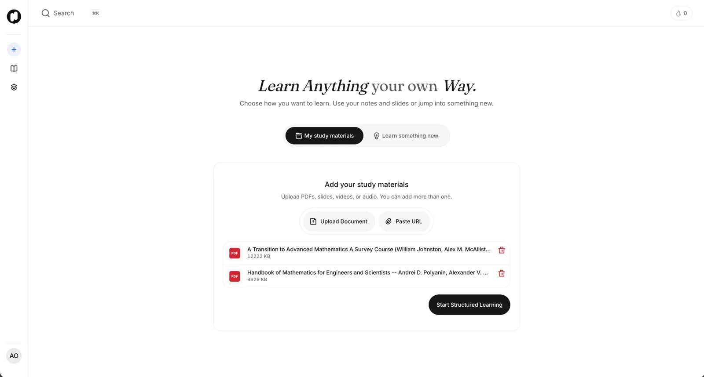
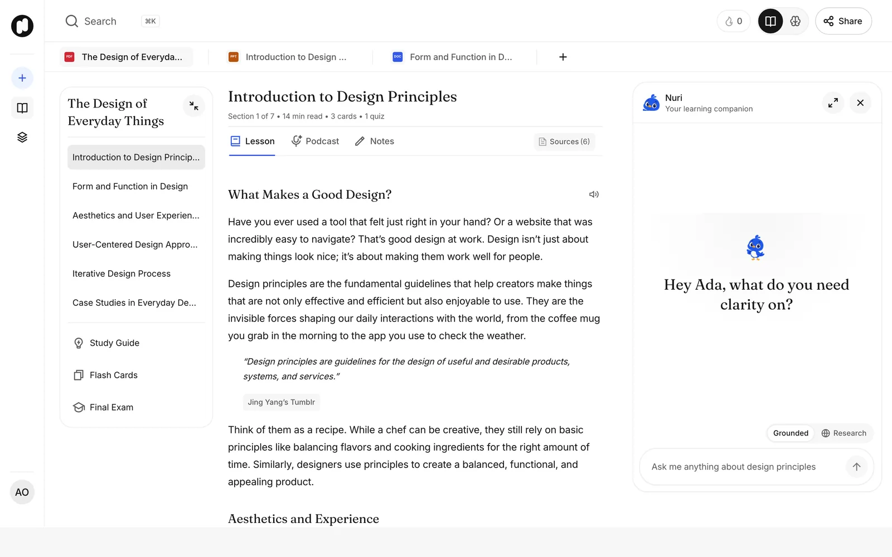
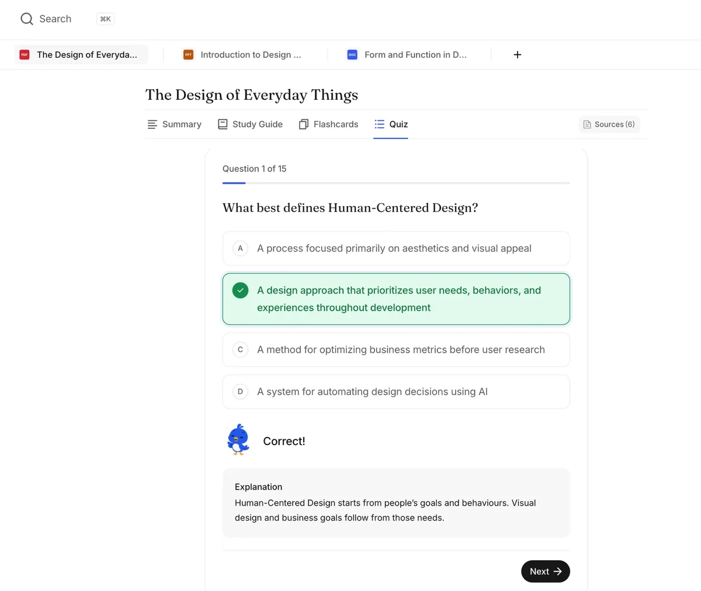
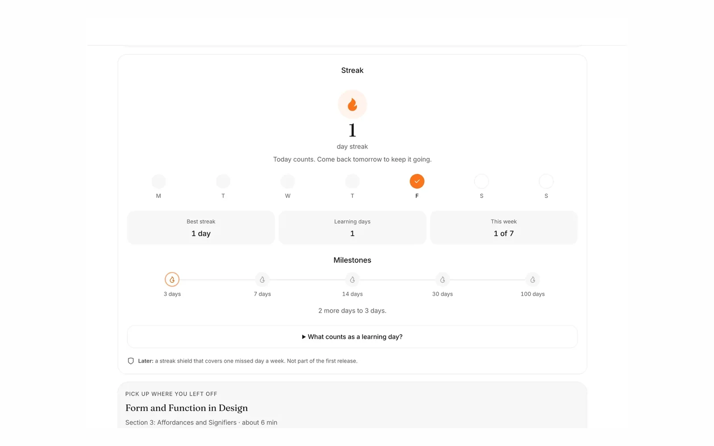
- Role
- Co-founder and lead product designer
- When
- November 2024 to now
- Scope
- Learner web app and mobile app, Nuri, gamification, design system
- Built with
- Designed in Figma. I built the design system and the connected prototype in code, with Claude. My co-founder engineers the production app.
- Usage
- 2,000+ sign-ups and 10,000+ lessons generated
The question
What if your notes could teach you back?
Students study from a pile of things: lecture slides, PDFs, YouTube videos, voice notes. The first version of Nuton took any of them and gave you a summary. That was useful for about a minute. A summary is shorter text, and shorter text isn't the same as understanding it, practising it, or remembering it next week.
Where it started
The first version stopped at the summary.
I designed that first version too. You uploaded a document or pasted a link, and Nuton returned a summary, a chat, flashcards and a quiz, all in tabs that looked the same. There was no path through them, no tutor that knew where you were, and nothing to bring you back the next day. Drag the handle to compare.
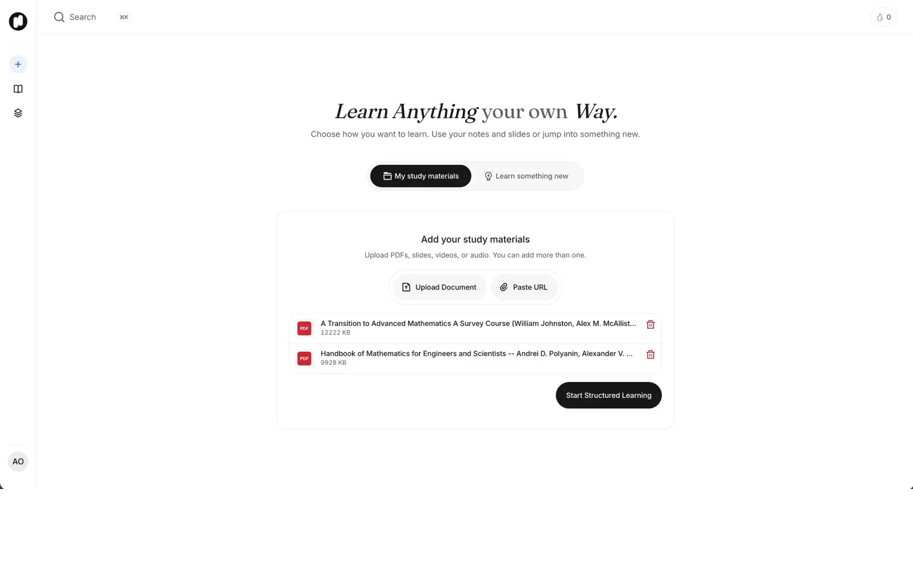
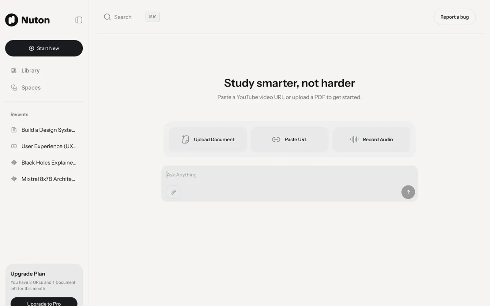
First version RedesignThe idea
Teach it, test it, and give people a reason to come back.
The redesign turned Nuton into a loop instead of a one-off. Learn how the student understands best, turn their material into a structured course, let them ask a tutor about any passage, check what stuck with quizzes and exams that explain themselves, then reward the habit of showing up. Every part of the learner app hangs off that loop.
- PersonaliseTwo questions on day one
- StructureMaterial becomes a course
- TutorNuri explains, on the page
- CheckQuizzes and a final exam
- ReturnStreaks, XP and badges
Learn your way
People don't all understand things the same way, so Nuton asks first.
Onboarding asks two questions: how you prefer to understand new ideas, and what kind of tutor works best for you. Each answer shows a live preview of the same topic, so you can feel the difference before you commit, and you can skip both and decide later. Try it: pick a style.
How do you prefer to understand new ideas?
Preview, Story-Based
Human-Centered Design
Imagine trying to open a door that looks like it should be pulled, but you need to push it. That moment of confusion? That's what happens when design doesn't match human expectations. Human-centered design starts by understanding these natural instincts…
The previews are Nuton's own copy from the onboarding screen.
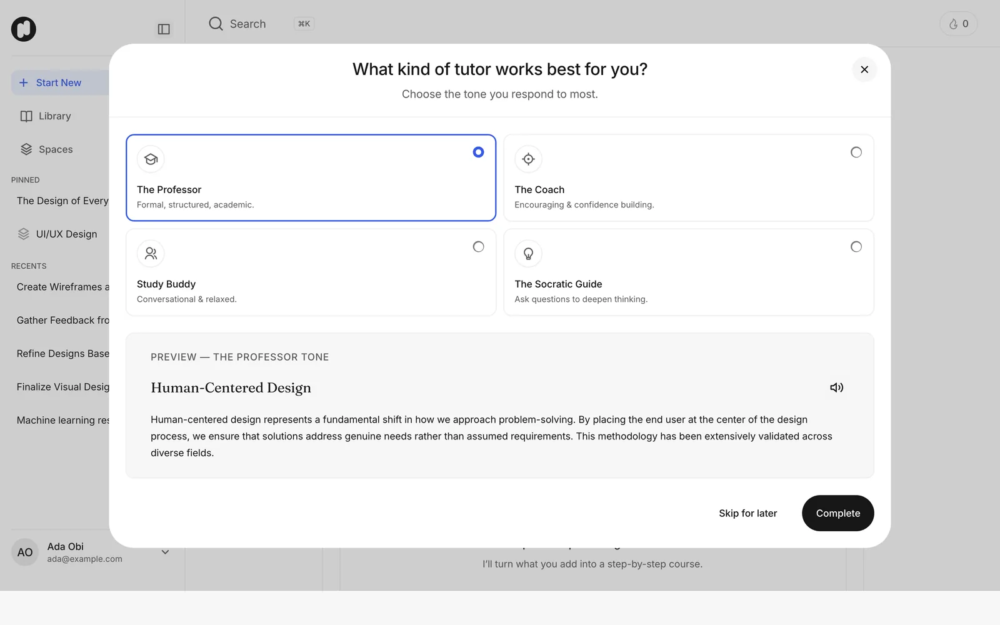
The second question picks the tutor's tone: The Professor, The Coach, Study Buddy or The Socratic Guide.
Three ways in
Some students arrive with a pile of slides. Some arrive with a topic and nothing else.
The old start screen put uploading front and centre. The new Start screen splits the first choice in two, "My study materials" or "Learn something new", and adds a Research mode that asks a couple of questions, searches the web and writes a report with its sources.
Add PDFs, slides, videos or audio, more than one at a time, then start structured learning.
Inside a lesson
One course, many ways to study it.
A course is split into sections you work through in order, with the contents on the left and Nuri on the right. Highlight any passage and you can ask Nuri about it, simplify it, or save it to your notes. When it's time to revise, the same material becomes a study guide, flashcards or a podcast you can listen to on the way to class.
Sections in order, contents on the left, Nuri on the right.
Meet Nuri
An AI tutor is easier to talk to when it has a face.
Nuri is Nuton's tutor: a small blue bird with thirteen expressions, each with a job. Nuri is happy when you get an answer right, encouraging when you don't, thinking while a reply is on its way, and celebrating when you finish a course. The rule I set: Nuri reacts to what the learner just did, never decorates, and the words beside it always say everything on their own. Tap an expression.
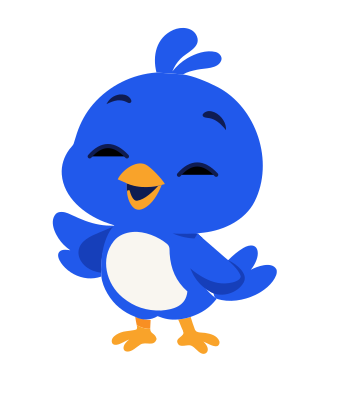
Happy
A correct answer, a warm greeting.
Nuri's artwork and animation pack live in the Figma file. I built the character into the design system as a component. It moves its own layers rather than swapping drawings: it breathes from the feet, tilts its head, sways its wings, blinks every few seconds, and opens its beak while a reply streams in.
Each expression plays a small accent when it appears (sparkles for a right answer, a heart after a wrong one, confetti at the end of a course) and then settles. With reduced motion turned on, Nuri stays still.
Quizzes that teach
A green tick teaches you nothing if you guessed.
In the first version a quiz only told you right or wrong. Now every answer comes with an explanation: why the right answer is right, and when you miss, what the correct option was and why. Students who guess and get lucky still learn something. Answer this one.
What best defines Human-Centered Design?
Correct!
Why this is right Human-Centered Design starts from people's goals and behaviours. Visual design and business goals follow from those needs.
Question and explanation are from the redesigned quiz.
A final exam that shows what to firm up
Each course ends with a final exam in a size you choose, mixing multiple choice, fill in the gap, theory and scenario questions. Results break down by question type, and the review lets you filter to just the answers that need another look.
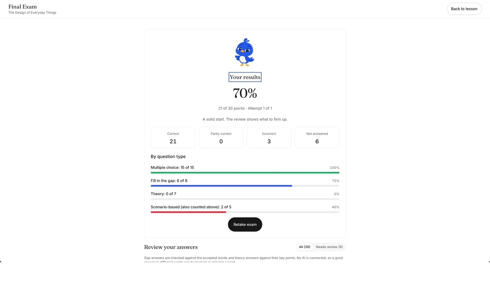
Results are broken down by question type.
Coming back
Studying works when you do a little every day, so I made a little every day feel good.
I added streaks, XP and badges, with Nuri reacting to each moment: excited when a streak starts, proud at a milestone, sad when one is lost. The rule behind all of it is written on the achievements page: badges mark real learning, and none of them can be earned just by opening the app. Build a streak below, then try missing a day.
0 day streak
Study today to start a streak.
- M
- T
- W
- T
- F
- S
- S
- 3 days
- 7 days
- 14 days
- 30 days
- 100 days
A simplified version of the streak screen, to show how it behaves.
The streak screen, with the next milestone always in view.
Keeping it together
A semester of courses needs somewhere to live.
The Library holds every lesson, in a list or a grid, with what's shared with you on its own tab. Spaces group lessons by subject, like a folder per class, and a space can have its own final exam pooled from every lesson inside it.
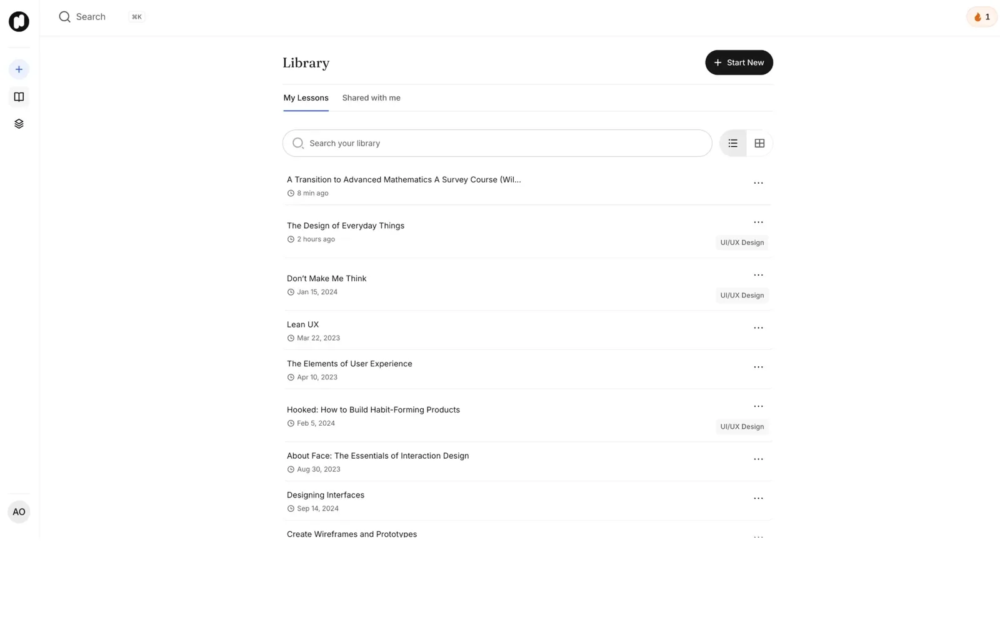
My Lessons and Shared with me, in a list or a grid.
On a phone
Most studying happens away from a desk.
The mobile app keeps the same loop in a phone-sized shape: a tab bar for New, Library, Spaces and Profile, lessons that read like an article, and Nuri a tap away.
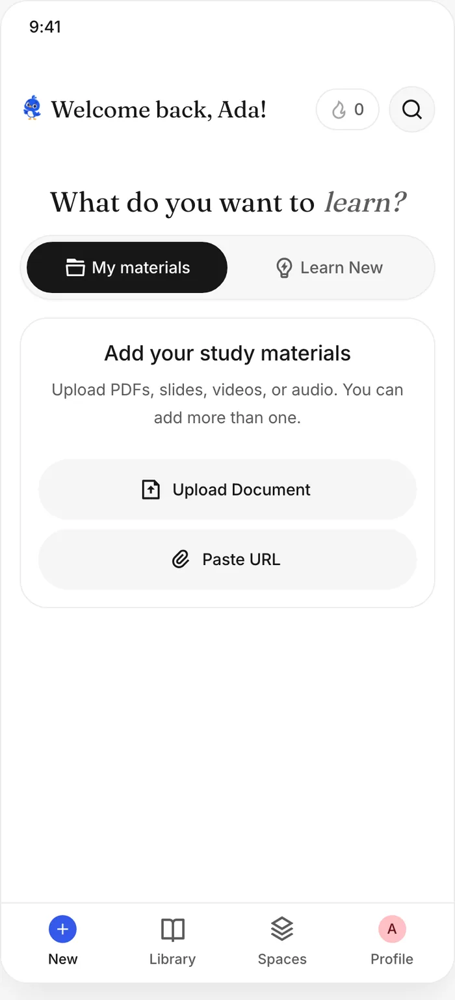
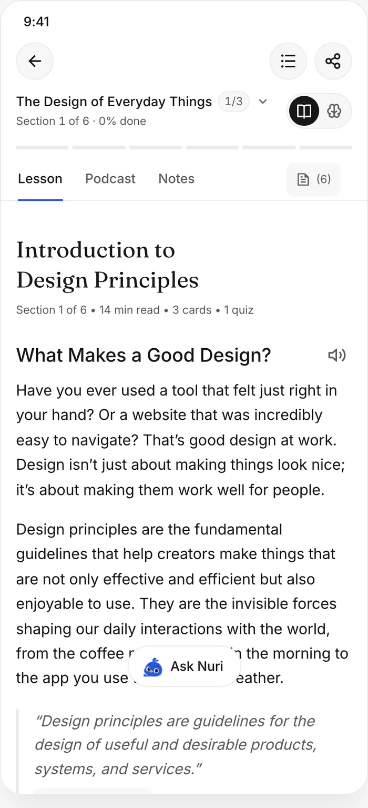
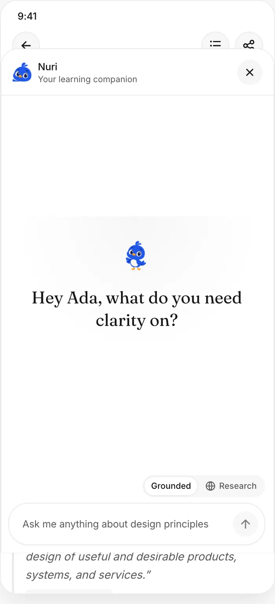
Built, not just drawn
I didn't stop at the Figma file. I built the system the app is made from.
With Claude, I turned the redesign into Nuton's design system in code, plus a connected prototype of the learner app that runs from sign-in to final exam. Every colour, size and shadow is a token generated from the Figma file, components are accessible by default, and each page is drawn in its loading, empty and error states too. The aim: engineering builds from real components, not a stack of static screens.
- 15learner pages designed
- 50+components
- 13Nuri expressions
- WCAG 2.2 AAbuilt in
Outcome
Nuton grew from a summariser into a place to actually study.
- 2,000+sign-ups
- 10,000+lessons generated
From Nuton's own analytics, reported by the founders.
Next on the list is a streak shield that covers one missed day a week. It's designed, and kept out of the first release.